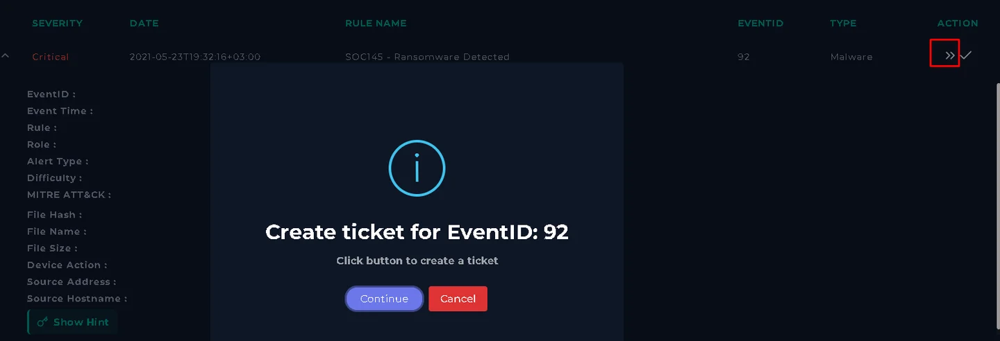
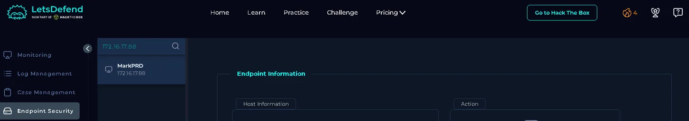
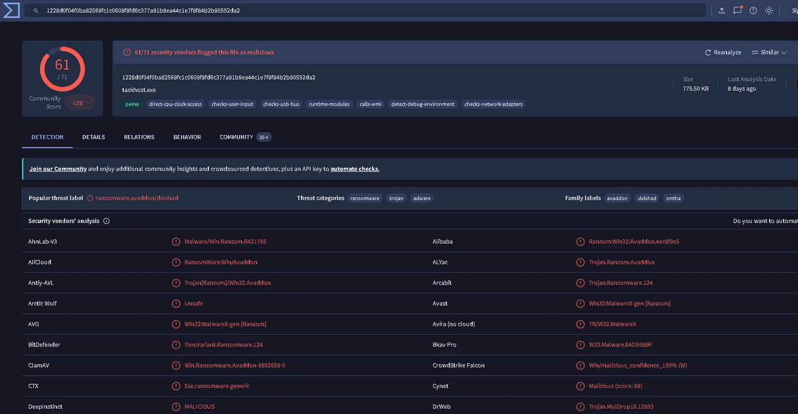
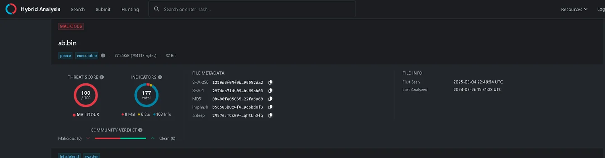
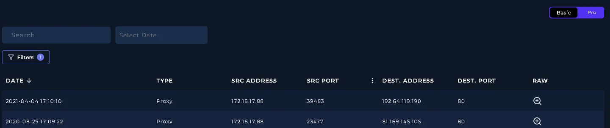
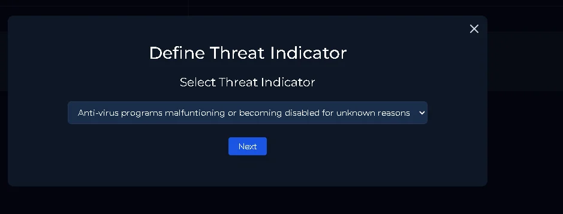
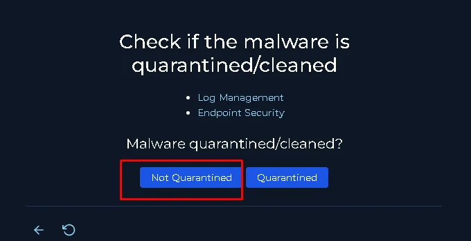
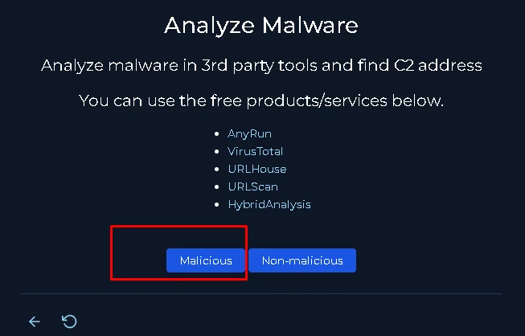
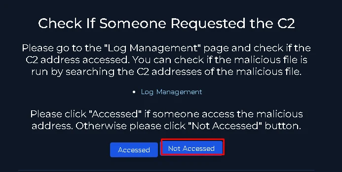
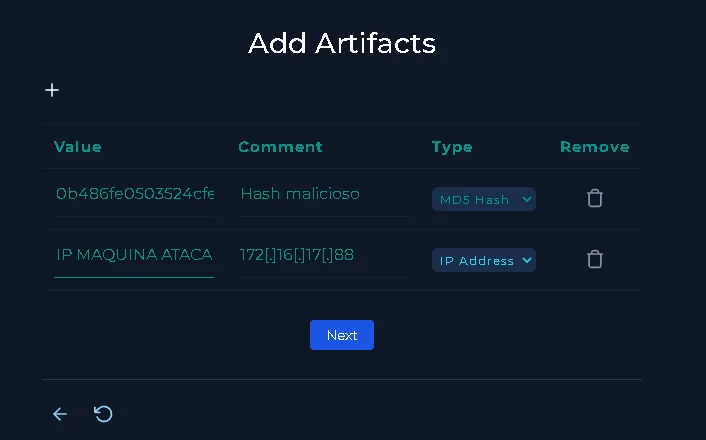

SOC145 · Ransomware Detected
- Categoria
- Malware
- Caso
- SOC145
- Registro
- Verdadeiro positivo
Resumo
Triagem de um incidente de ransomware com atividade suspeita em um host monitorado.
Passo a passo da investigação
Triagem inicial
O primeiro passo foi abrir o chamado.

Durante a triagem, identificamos o IP
172[.]16[.]17[.]88, associado ao host
MarkPRD. No Endpoint Security, analisamos a seção de
processos e observamos atividade suspeita.

Análise dos arquivos
Enviamos o hash 0b486fe0503524cfe4726a4022fa6a68 ao
VirusTotal e ao Hybrid Analysis. A análise indicou que o arquivo era
malicioso.


Consulta aos registros
Consultamos o IP 172[.]16[.]17[.]88 no Log Management
para aprofundar a análise, mas os resultados não foram conclusivos.

Resumo da análise
Também analisamos o hash
1228d0f04f0ba82569fc1c0609f9fd6c377a91b9ea44c1e7f9f84b2b90552da2
no VirusTotal e no Hybrid Analysis. O arquivo ab.exe foi
classificado como malicioso, com 61 de 71 detecções, e associado à
família de ransomware Avaddon. O arquivo foi
identificado no host 172[.]16[.]17[.]88, associado ao
usuário MarkPRD. Pendente de
confirmação: verificar nos registros se a execução ou a
comunicação foi confirmada; caso contrário, registrar que não foi
possível confirmá-la. O host foi isolado no EDR. A conclusão registrada
foi True Positive.
Evidências





Exercício simulado. Algumas capturas foram recortadas ou tiveram campos ocultados.